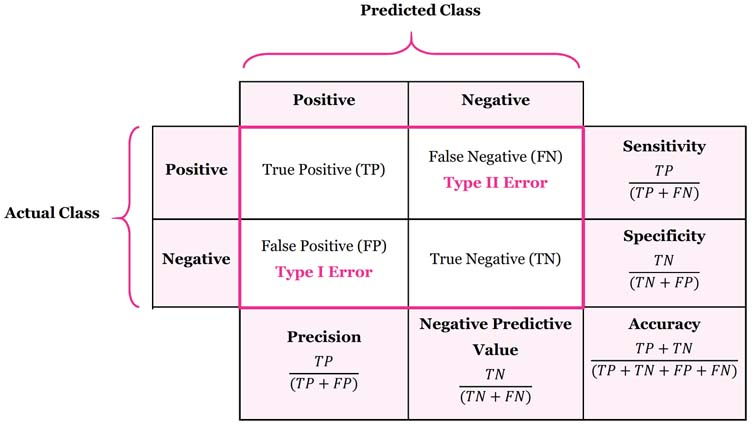

Chapter 3 Supervised Learning
From the data, find a function f of the inputs that best approximates the outputs.
\[ \hat{Y} = f(X_1,..,X_n) \]
- Predictive: Make predictions for a new object described by its attributes
- Informative: help understand the relationship between inputs and outputs
Divide data into
- Training set: train model
- Validation set: tune hyper parameters
- Test set: evaluation of the model for generalization error.
Learning algorithm
defined by
- a family of candidate models (= hypothesis space H)
- a quality measure for a model
- an optimization strategy
takes as input a leaning sample and outputs a function h in H of maximum quality
Model selection
Why not choose the model that minimizes the error rate on the learning sample? (re-substitution error)
How well are you going to predict future data drawn from the same distribution? (generalization error)
Evaluation on test set
- Randomly choose a percentage (e.g., 30%) of the data to be in a test set
- The remainder is training set
- Learn the model from the training set
- Estimate its future performance on the test set.
Problems:
- overfits: occurs when the learning algorithm starts fitting noise.
- underfits
Evaluation on test set:
Good:
- Very simple
- Computationally efficient
Bad:
- Waste data
- very unstable when database is small
Another evaluation: Leave-one-out cross validation
For k = 1 to N
- remove the k-th object from the learning sample
- learn the model on the remaining objects
- apply the model to get a prediction for the k-th object
report the proportion of mis-classified objects
Good:
- Do not waste the data (you get an estimate of the best method to apply to N-1 data)
Bad:
- Computationally intensive (train N models)
- high variance.
Another evaluation: K-fold cross validation:
Break up data into k folds
For each fold
- Choose the fold as a temporary test set
- Train on k-1 folds, compute performance on the test fold.
Report average performance of the 10 runs.
randomly partition the dataset into k subsets (e.g., 10)
For each subset:
- learn the model on the objects that are not in the subset
- compute the error rate on the points in the subset. Report the mean error rate over the k subsets.
When k = the number of objects -> leave-one-out-cross validation.
Rule-of-thumb for evaluation
- Lots of data (>1000) test set validation
- small data (100-1000): 10-fold CV
- very small data (<100) leave one out CV.
## Warning: package 'jpeg' was built under R version 4.0.5
Use the testing set to estimate the performance of the final model
Performance measures
- The error rate is no the only way to assess a predictive model.
- In binary classification, results can be summarized in a contingency table (i.e., confusion matrix)

Various criteria
\[ \text{Error rate} = \frac{FP + FN}{N + P} \\ \text{Accuracy} = \frac{TP + TN}{N + P} = 1 - \text{Error rate} \\ \text{Sensitivity or recall} = \frac{TP}{P} \\ \text{Specificity} = \frac{TN}{TN + FP} \\ \text{Precision} = \frac{TP}{TP + FP} \\ \]
ROC and precision/recall curves
- Each point corresponds to a particular choice of the decision threshold.
Also known as robustness check
You want large area under the curve
Compassion of learning models
Three main criteria:
- Accuracy: Measures by the generalization error (estimated by CV)
- Efficiency: Computing times and scalabiility for learning and testing
- Interpretability: Comprehension brought by the model about the input-output relationship.
- Accuracy: Measures by the generalization error (estimated by CV)
Depends on the application, you have to make trade-off.
Learning Techniques
Supervised learning categories and techniques
Linear classifier (numerical functions):
- Perceptron
- Logistic regression
- Support vector machine (SVM): linear to nonlinear: feature transform and kernel function
- Ada-line
- Multi-layer perceptron (MLP)
Parametric (Probabilistic functions)
- Naive Bayes, Gaussian discriminant analysis (GDA), Hidden Markov models (HMM), probabilistic graphical model
Non-parametric (Instance-based functions)
- K-nearest neighbors, Kernel regression, Kernel density estimation, local regression.
Non-metric (symbolic functions)
- Classification and regression tree (CART), decision tree
Aggregation
- Bagging (bootstrap + aggregation), Adaboost, Random forest.
Unsupervised learning categories and techniques:
Clustering
- K-means clustering
- Spectral clustering
Density Estimation
- Gaussian mixture model (GMM)
- Graphical models
Dimensionality reduction
- Principal component analysis (PCA)
- Factor analysis
Semi-supervised learning
goal: exploit both labeled and unlabeled data to build better models than using each one alone
Self-training:
- Iteratively label some unlabeled examples with a model learned from the previously labeled examples
- Active learning.
Reinforcement learning
- Learning from interactions
- Goal: learn to choose sequence of actions (=policy) that maximizes \(r_0 + \gamma r_1 + \gamma^2r_2 + ...\) where \(0 \le \gamma <1\)
3.1 Decision Tree
Is a tree-structured plan of a set of attributes to test to predict the output.
Give one attribute, try to predict the value of new people’s attribute by means of some other available attribute
Input attributes:
d features/ attributes \(x^{(1)},x^{(2)},...,x^{(d)}\)
Each \(x^{(j)}\) has domain \(O_j\)
- Categorical \(O_j=(read,blue)\)
- Numerical: \(H_j = (0,10)\)
Y is output variable with domain \(O_Y\):
- Categorical: Classification
- Numerical: regression
Data D:
n examples \((x_i, y_i)\) where
- \(x_i\) is a d-dim feature vector
- \(y_i\in O_Y\)
Decision trees:
- Split the data at each internal node
- Each leaf node makes a prediction
How to construct a tree
3.1.1 Find best split
Pick an attribute and value that optimizes some criterion
+ Regression: Purity + Classification: Information Gain: Measures how much a given attribute X tells us about the class Y.
Information Gain? Entropy
The entropy of X: \(H(X) = -\sum_{j=1}^{m} p_j log p_j\)
“High entropy”: X is from a uniform distribution
- A histogram of the frequency distribution of values of X is flat
- A histogram of the frequency distribution of values of X is flat
“Low Entropy”: X is from varied distribution
- A histogram of the frequency distribution of values of X would have many lows and one or two highs.
- A histogram of the frequency distribution of values of X would have many lows and one or two highs.
Def: Information Gain:
- \(IG(Y|X) = H(Y) - H(Y|X)\) I must transmit Y. How many bits on average would it save me if both ends of the line knew X?
3.1.2 Stopping Criteria
- When the leaf is “pure”: the target variable does not vary too much: Var(Y) < threshold.
- When number of examples in the leaf is too small.
- Could also use information as as a stopping criteria.
3.1.3 Find Prediction
- Regression: Predict average y of the examples
- Classification: Predict most common y of the examples the leaf.
3.2 Random Forest
Ensemble methods
- A single decision tree does not perform well.
- But, it is super fast.
- What if we learn multiple trees?
Bagging
If we split the data in random different ways, decision trees give different results, high variance.
Bagging: Bootstrap aggregating is a method that result in low variance.
If we had multiple realizations of the data (or multiple samples) we could calculate the prediction multiple times and take the average of the fact that averaging multiple onerous estimations produce less uncertain results
say for each sample b, we calculate \(f^b(x)\), then \(\hat{f}_{avg} (x) = \frac{1}{B} \sum_{b=1}^{B} \hat{f}^b (x)\)
Bootstrap: Construct B (hundreds) of trees. Learn a classifier for each bootstrap sample and average them. Very effective.
Reduces overfitting (variance)
Could use one classifier, or multiple classifiers.
Easy to parallelize
Variable Importance Measures
- Bagging results in improved accuracy over prediction using a single tree
- Unfortunately, difficult to interpret the resulting model. Bagging improves prediction accuracy at the expense of interpretability.
Issues:
Each tree is identically distributed (i.d)
- The expectation of the average of B such trees
- The bias of bagged trees is the same as that of individual trees
An average of B i.i.d random variables, each with variance \(\sigma^2\), has variance \(\sigma^2/B\). If i.d. (identical but not independent) and pair correlation \(\rho\) is present, then the variance is : \(\rho \sigma^2 + \frac{1-\rho}{B} \sigma^2\) . As B increases, the second term disappears but the first term remains.
Suppose that there is one very strong predictor in the data set, along with a number of other moderately strong predictors. Then all bagged trees will select the strong predictor at the top tree and therefore all trees will look similar.
- We can penalize the splitting with a penalty term that depends on the number of times a predictor is selected at a given length.
- restrict how many items a predictor can be used.
- allow a certain number of predictors.
Since we want i.i.d so that the bias to be the same and variance to be less.
- in bagging, we build a number of decision trees on bootstrapped training samples each time a split in a tree is considered, a random sample of m predictors is chosen as split candidates from the full set of p predictors (if m = p, then this is bagging).
Random Forests Algorithm
For b = 1 to B:
draw a bootstrap sample Z * of size N from the training data.
Grow a random-forest tree to the bootstrapped data, by recursively repeating the following steps for each terminal node of the tree, until the minimum node size \(n_{min}\) is reached.
- Select m variables at random from the p variables.
- Pick the best variable/split-point among the m.
- Split the node into two daughter nodes.
- Select m variables at random from the p variables.
Output the ensemble trees.
| Regression | Classification | |
|---|---|---|
| To make a prediction at a new point x | average the results | majority vote |
| Tuning | The default value for m is \(p/3\) and the minimum node size is 5 | The default value for m is \(\sqrt{p}\) and the minimum node size is one |
Another issue:
When the number of variables is large, but the fraction of relevant variables is small, random forests are likely to perform poorly when m is small. Because: At each split the chance can be small that the relevant variables will be selected.
Example: with 3 relevant and 100 not so relevant variables the probability of any of the relevant variables being selected at any split is approx 0.25.
random forests “cannot overfit” the data because the number of trees (B) does not mean increase in the flexibility of the model.
Always include Random Forest (ensembles) and XGBoost (like bagging)
Alternative
- Support vector machine (SVM) dont usually use this because of computational reasons and because it is only 1 model.